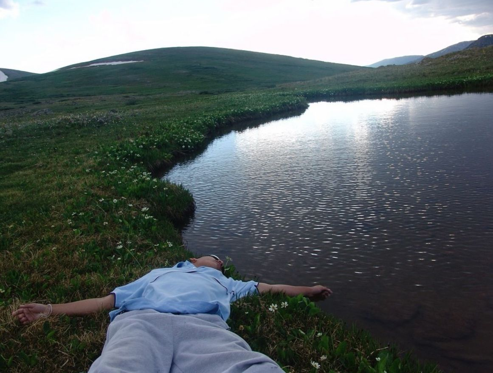

Surrender = detachment = freedom = hapiness

one thing i've noticed over time is that the quicker you surrender, the quicker you evolve/grow and consequently the quicker you find peace. surrender to pain, to exhaustion, to happiness, to love, and everything you experience, whether negative or positive. i say this because i’ve always been against negative things – and that’s always, without exception, brought me more unnecessary pain; if i felt anxious, i’d try to do something to stop it (and that's the point, you should surrender to that too). if you drank to feel better, surrender to that, and maybe, just maybe, you'll reach a conclusion that could change the course of your life. maybe you'll start exercising, or cleaning your house, or even writing about things that weigh on you, who knows?